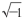

摘要：“我的”。不允许。寒冷的地板。
还是昨天发生的事情。昨天睡前的个人时间我有别的事情，所以没有写。但是那些事情像深深刻在我脑子里一样清晰，很不寻常，我想我应该永远也不会忘记，尤其是那冷得让人受不了的地板……
O晚上应该来我这儿，今天是属于她的。我下楼去值班人员那里领取放下窗帘的许可证。
“您不舒服吗？”值班人员问，“您今天看起来有点不大对劲……”
“我……生病了。”
从本质上来说，我并没有说谎。我当然是生病了，而且病得很重。我又立即想起来，对呀，我还有医生开的证明呢……我把手伸进口袋探了探，证明还在口袋里沙沙作响呢。这么说，这一切真的发生过……
我把证明递给了值班员。我感觉我的脸在燃烧。我没敢看值班员，但我感觉到她正用奇怪的眼光看着我……
21点30分。我左邻房间的窗帘已经放下，右边房间的邻居在看书。他把头埋在书里，只露出因为脱发而变得坑坑洼洼的头顶和额头——它们一起形成了一个巨大的黄色抛面。我在房间坐立难安，来回踱着步。那件事发生之后，我和O该怎么相处？我明显感到右边邻居正在看着我，我能清楚地看见他额头的皱纹，就像一行行难以辨认的黄字，我不知道从哪里来的想法，我觉得这些字句都是与我有关的。
差15分钟22点。我的房间里卷起了一阵快乐的粉色旋风，O的手臂像一个粉色的圆圈围住了我的脖颈。但是马上我感觉到脖颈上的圆圈越来越松，越来越松，最后圆圈散开了。她把手从我脖子上放下来了……
“您不是之前的那个您了，您不是我的了！”
“我的”，多么野蛮的词汇啊！我从来也不曾是……我一时语塞。我这时突然想起来，我之前的确没有归属，但是眼下……眼下我并不活在这个理性的世界里，而是在那古老的、荒诞的的世界里。
窗帘缓缓落下。右边屋子里有一本书从桌子上掉了下来。在窗帘就要和地板相接的缝隙里，我看见一只枯黄的手把书从地上捡起，但是我多么想使劲抓住这只手啊……
“我本以为，我本来想，想今天散步的时候跟您见面，因为，我有好多话要对您说……”
惹人怜爱的O啊！她那粉色的嘴像月牙儿似的往下耷拉着。但是我不能把发生的事情跟她讲。换句话说，我不想因为她因为知情而成为我的共犯。因为我知道，她肯定不敢去护卫局，这样一来……
O躺在床上。我慢条斯理地亲吻她，我亲吻她手腕上孩童般丰润的肉褶。她闭上了蓝色的眼睛，月牙似的粉色嘴唇慢慢有了笑意——我将她全身都亲吻了一遍。
我突然清晰地感觉到，我已耗尽所有，油尽灯枯。我做不到，我失去了能力。我应该——但是我做不到。我的嘴唇迅速失去了温度……
粉红色的月牙开始颤抖了，上面的光泽也不见踪影，因为痛苦而变了形状。O用床罩裹住身体，用枕头埋住了自己的头……
我在床边的地板上坐着，地板很凉，我沉默地坐着。
地板下面传来难以忍受的寒冷，它不间断地向上升腾着。或许，在那蓝色的寂静的星球空间里面，也和这地板一样缄默，一样寒冷吧。
“您知道的，我并不是不愿意……”我小声说着，“我尽了全力……”
我没有说谎。我——那个真正的我并不想这样。可是我该如何向她解释呢？铁石虽然不愿意，可是规律是必然的，是不能违背的……
O从枕头上把头抬起来，眼睛没有睁开，对我说：“您走吧。”伴着哭声，她说的“走”莫名其妙听起来像“抖”，我也鬼使神差地记住了这个细节。
我全身冰冷。我肢体僵硬地出了房间来到了走廊上。玻璃外面飘着一丝若隐若现的雾气，夜再深一些，估计又会出现浓雾吧。那夜里会不会出什么事？
O从我身边钻了过去，走进了电梯，电梯门砰的一声关上了。
“等一下。”我喊了出来，因为我害怕了起来。
随着嗡嗡的响声，电梯一直往下……往下……
她抢走了R,O也因为她离开了我。但是……但是……